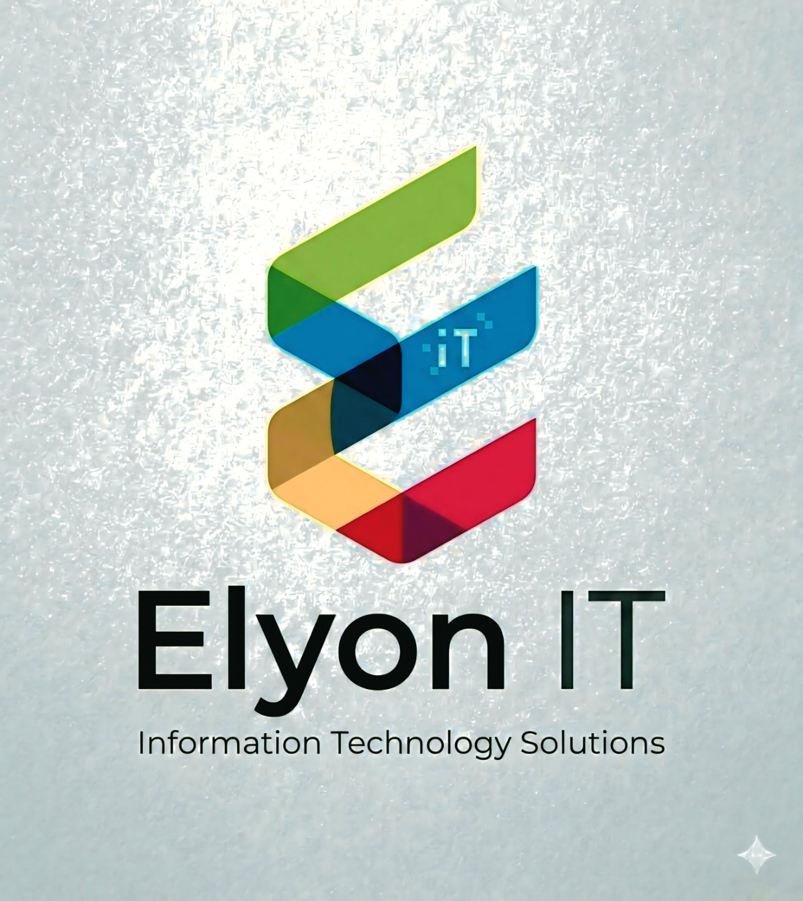

Empowering enterprises with elite technology professionals, strategic staffing solutions, and innovation-driven IT consulting.
Connect With UsThe Future of Talent. The Power of Precision. At Elyon IT LLC, we believe that in a rapidly evolving digital landscape, the right talent isn't just a resource—it’s a competitive advantage. Headquartered in Wyoming, USA, we are a premier IT staffing and consultancy firm dedicated to bridging the gap between visionary companies and the world’s most elite technical professionals.
We don’t just fill roles; we build the architectural backbone of innovation. By combining high-velocity recruitment with a deep understanding of emerging technologies, Elyon IT empowers enterprises and high-growth startups to scale faster, smarter, and with absolute confidence.
IT staffing is a professional service that helps companies find, hire, and manage skilled technology professionals for their business needs. Instead of spending months searching for the right talent, companies partner with IT staffing firms to quickly connect with qualified software engineers, cloud specialists, data analysts, cybersecurity experts, ERP consultants, and other technology professionals. IT staffing companies act as a bridge between businesses and top technical talent. They understand both the technical requirements of modern enterprises and the skills needed to complete critical projects successfully. IT staffing services can include: • Staff Augmentation – Providing skilled professionals for short-term or long-term projects • Contract-to-Hire – Allowing companies to evaluate candidates before permanent hiring • Direct Placement – Recruiting full-time employees for permanent roles • Managed Solutions – Delivering complete project-based workforce solutions • Remote & Onsite Hiring – Supporting flexible workforce models In today’s fast-moving digital world, IT staffing helps businesses scale quickly, reduce hiring time, access specialized expertise, and stay competitive in rapidly evolving technologies such as cloud computing, AI, cybersecurity, ERP systems, and software development. At ElyonIT LLC, IT staffing is more than recruitment — it is about delivering the right talent, at the right time, with precision and reliability to help organizations innovate and grow confidently.
ElyonIT LLC is a forward-thinking IT staffing and consulting company dedicated to connecting businesses with exceptional technology talent and innovative digital solutions. Headquartered in Wyoming, USA, we specialize in helping organizations build high-performing teams that drive growth, efficiency, and transformation in today’s rapidly evolving digital landscape. We are a passionate team of industry professionals, recruiters, technologists, and consultants united by a shared commitment to excellence, precision, and innovation. With deep expertise in modern technologies and enterprise workforce solutions, we help businesses scale confidently by delivering the right talent for the right opportunities. At ElyonIT, we believe successful partnerships are built on trust, quality, and long-term value. Our approach combines strategic recruitment, technical understanding, and client-focused solutions to support startups, growing enterprises, and Fortune 500 organizations across diverse industries. Driven by integrity, collaboration, and continuous improvement, ElyonIT LLC is committed to shaping the future of technology staffing and empowering businesses through people, innovation, and expertise.
At ElyonIT LLC, we provide innovative IT staffing, recruitment, and technology consulting solutions that help businesses build stronger teams, accelerate digital transformation, and achieve long-term success. We specialize in connecting organizations with highly skilled technology professionals who bring expertise, innovation, and efficiency to every project. Our services are designed to support startups, mid-sized businesses, and enterprise organizations across a wide range of industries by delivering scalable workforce and technology solutions tailored to their unique needs. What we specialize in: • IT Staffing and Recruitment • Staff Augmentation and Contract-to-Hire Solutions • Direct Placement Services • ERP Implementation and Support • Cloud and Infrastructure Solutions • Software Engineering and Application Development • Data Intelligence and Analytics • Enterprise Technology Consulting • Managed Solutions and Workforce Support By combining industry expertise with a deep understanding of emerging technologies, ElyonIT LLC helps businesses reduce hiring challenges, improve operational efficiency, and stay competitive in a rapidly evolving digital world. Our goal is to deliver the right talent and technology solutions that empower organizations to grow with confidence and precision.
US IT Staffing in Software Engineering refers to recruiting and placing software professionals for companies in the United States. These staffing companies help businesses hire developers, testers, cloud engineers, data analysts, DevOps engineers, and other IT professionals for contract, full-time, or remote roles.
We provide specialized Data Intelligence staffing solutions for organizations seeking skilled professionals in data analytics, business intelligence artificial intelligence, and data engineering across the United States. Our recruitment expertise helps businesses transform raw data into meaningful insights that support smarter decision-making and business growth.
Empowering businesses with secure, scalable, and future-ready cloud solutions, ElyonIT LLC helps organizations modernize their IT ecosystems through advanced cloud architecture, infrastructure management, and digital transformation services. We specialize in designing, deploying, and optimizing cloud environments across public, private, and hybrid platforms to ensure maximum performance, reliability, and business continuity
At ElyonIT LLC, we transform ideas into innovative digital products and user-centric experiences that drive business growth and customer engagement. Our Product & Design services focus on building scalable, intuitive, and visually compelling solutions that align with modern business goals and evolving market demands.
ElyonIT LLC provides flexible and scalable Staff Augmentation solutions that help organizations strengthen their workforce with highly skilled IT professionals on demand. We enable businesses to quickly bridge talent gaps, accelerate project delivery, and adapt to changing business needs without the complexities of traditional hiring processes.
ElyonIT LLC offers strategic Contract-to-Hire staffing solutions that allow organizations to evaluate top-tier talent on the job before making long-term hiring decisions. This flexible hiring approach reduces recruitment risks, improves workforce planning, and ensures the right fit for both technical expertise and company culture.
We offer comprehensive Direct Placement services to help organizations find and hire the right candidates for their permanent positions, ensuring a perfect match between skills and requirements.
Our Managed Solutions approach provides end-to-end project management and resource allocation, ensuring that your initiatives are delivered on time, within budget, and to the highest quality standards.
Work With Purpose at ElyonIT LLC means being part of a mission that goes beyond traditional recruitment and staffing. It is about helping businesses transform through technology while empowering talented professionals to build meaningful careers in the digital world. At ElyonIT, every project, placement, and partnership contributes to innovation, growth, and real-world impact. Whether supporting startups, enterprises, or Fortune 500 organizations, our team works with a shared vision — delivering the right talent, the right solutions, and the right technology to shape the future. We believe work should inspire creativity, collaboration, and continuous learning. Our culture encourages professionals to challenge boundaries, develop new skills, and grow alongside emerging technologies in cloud computing, software engineering, data intelligence, ERP systems, and enterprise solutions. Working with purpose also means: • Creating value for clients through precision-driven staffing • Building long-term professional relationships • Encouraging innovation and leadership • Supporting career growth and technical excellence • Maintaining integrity, trust, and accountability in every engagement At ElyonIT LLC, careers are not just jobs — they are opportunities to contribute to meaningful digital transformation while growing personally and professionally in a future-focused environment.
Grow With Us at ElyonIT LLC is about building a future where talent, innovation, and opportunity evolve together. We are committed to creating an environment where professionals can continuously learn, lead, and achieve their full potential in the ever-changing world of technology. At ElyonIT, growth is not limited to job titles — it is about expanding skills, embracing challenges, and becoming part of transformative projects that shape modern enterprises. We encourage our team members to explore emerging technologies, strengthen technical expertise, and develop leadership capabilities while working alongside industry professionals and forward-thinking clients. As a growing IT staffing and consultancy company, we provide opportunities to: • Work on impactful technology-driven projects • Gain exposure to enterprise-level environments • Enhance professional and technical skills • Collaborate with experienced recruiters, consultants, and engineers • Build a long-term and rewarding career path We believe that when our people grow, our company grows stronger. By fostering innovation, teamwork, and continuous improvement, ElyonIT LLC empowers professionals to move forward with confidence, purpose, and ambition in their careers.
Career Development at ElyonIT LLC is focused on empowering professionals with the knowledge, experience, and opportunities needed to succeed in today’s competitive technology landscape. We are committed to helping individuals continuously improve their technical expertise, leadership abilities, and professional confidence while building meaningful long-term careers. At ElyonIT, we believe learning never stops. Our work environment encourages innovation, adaptability, and continuous growth through exposure to real-world enterprise projects, emerging technologies, and collaborative teamwork. We support professionals in strengthening their capabilities across software engineering, cloud technologies, ERP systems, data intelligence, infrastructure solutions, and IT consulting. Our approach to career development includes: • Continuous learning and skill enhancement • Exposure to modern technologies and enterprise solutions • Professional mentorship and guidance • Opportunities for leadership and career advancement • Hands-on experience with high-impact projects • A culture that values creativity, innovation, and performance We are dedicated to creating a future-ready workforce where individuals can grow personally and professionally while contributing to meaningful digital transformation initiatives. At ElyonIT LLC, career development is not just about progression — it is about unlocking potential and building lasting success.
Life at Employment with ElyonIT LLC is built around collaboration, innovation, and professional growth. We foster a work culture where individuals feel valued, supported, and inspired to contribute their best every day. Our environment encourages creativity, teamwork, and continuous learning while maintaining a strong focus on work-life balance and employee well-being. At ElyonIT, employees have the opportunity to work alongside experienced professionals on impactful technology and staffing solutions that help businesses grow and transform. We believe that a positive workplace drives both personal success and organizational excellence. What makes life at ElyonIT unique: • A collaborative and inclusive work environment • Opportunities to work with modern technologies and enterprise projects • Continuous learning and professional development support • Recognition for innovation, dedication, and performance • Flexible and growth-oriented career opportunities • A culture built on integrity, respect, and teamwork We are committed to creating an environment where employees feel empowered to learn, grow, and achieve long-term success while being part of a forward-thinking organization shaping the future of technology staffing and consulting.
Call: 307-340-9398
Email: info@elyonit.com
Address:
1309 Coffeen Avenue STE 1200,
Sheridan, Wyoming 82801